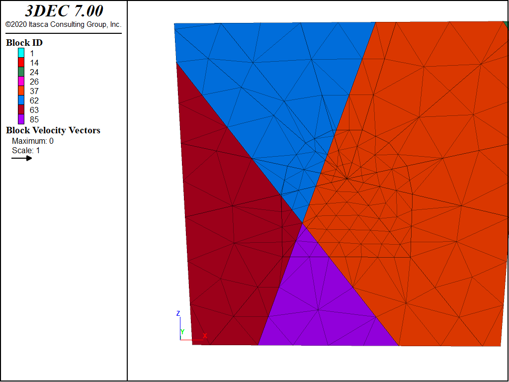
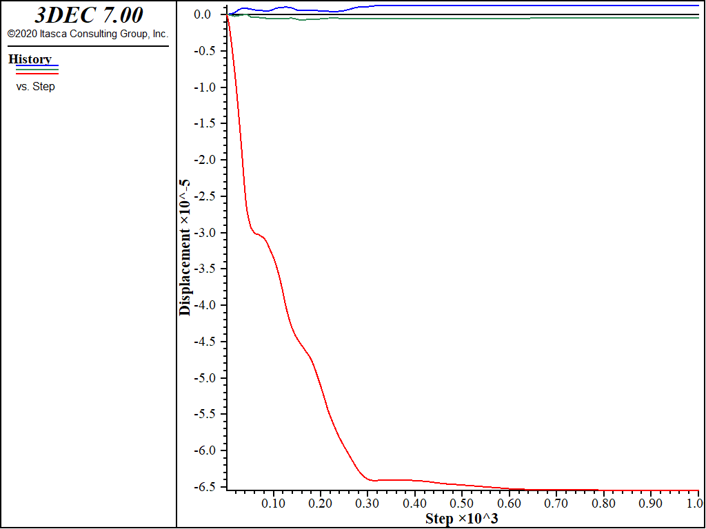
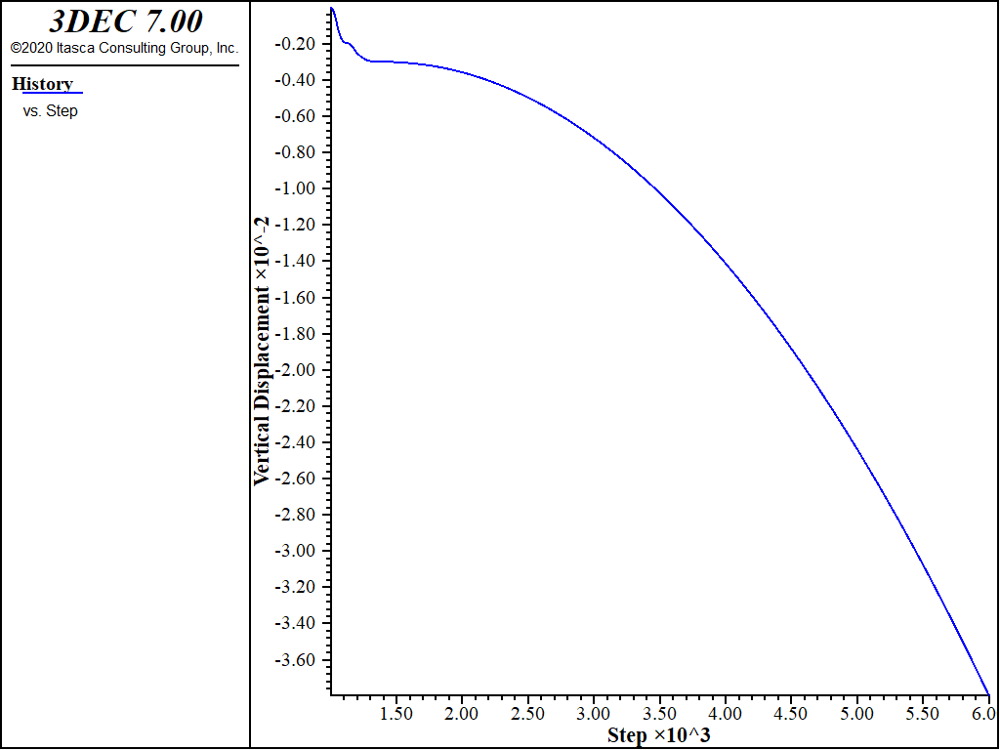
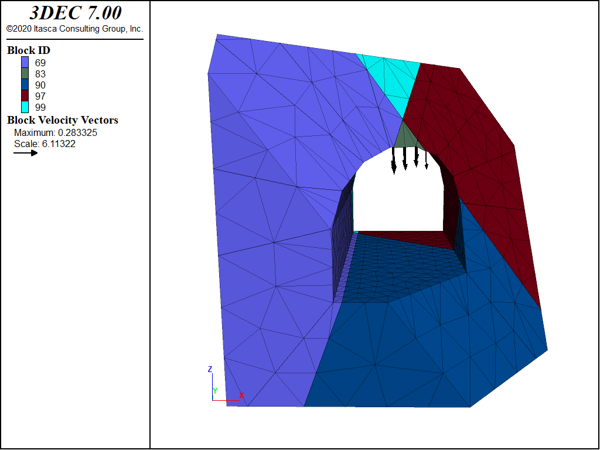
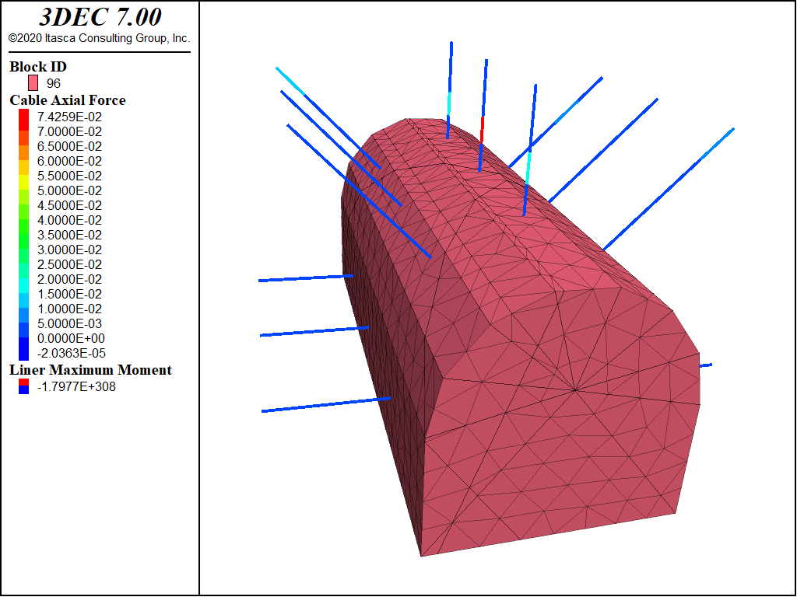
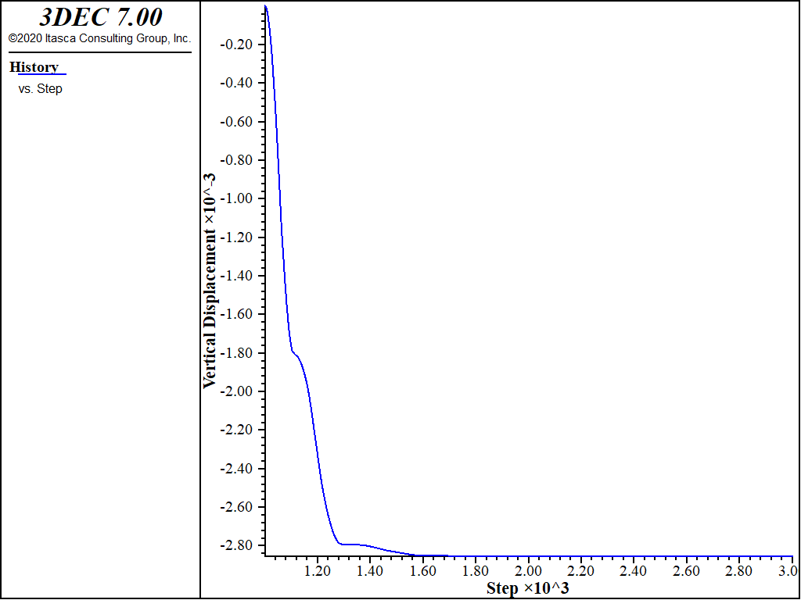
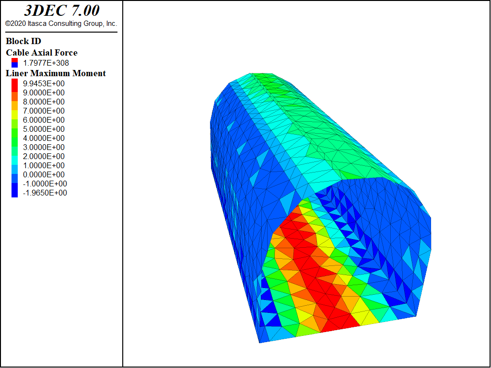
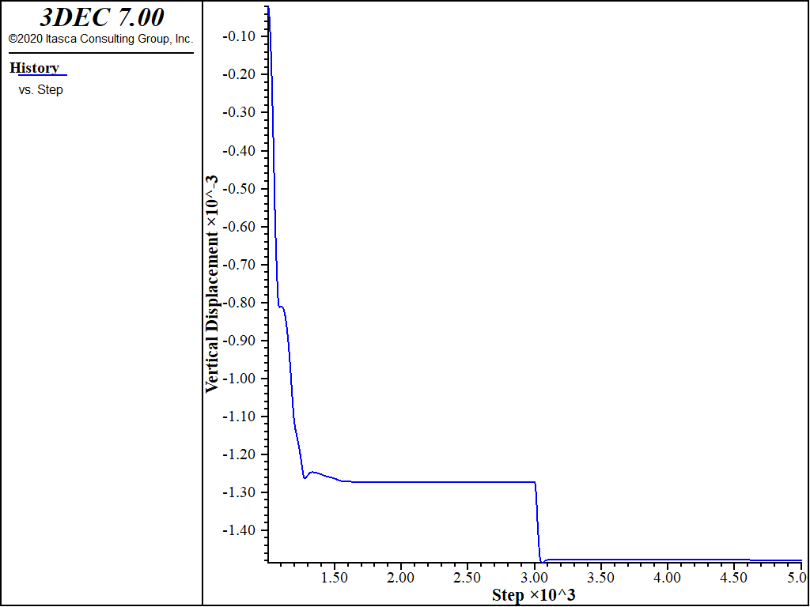

加载与顺序建模
在分析不同阶段施加不同的模型加载条件，可以模拟实际荷载的变化，例如开挖和施工顺序。加载变化可以通过多种方式指定，例如施加新的应力或位移边界、将块体材料模型改为空材料或其他材料模型，或改变材料属性。
必须认识到，顺序建模遵循工程施工的阶段。大多数分析中，每个施工阶段对应荷载变化后的一个静力解，即物理时间不是参数。3DEC 还可进行传热和动力力学分析（见动力分析（Dynamic Analysis）和热分析选项（Thermal Option））。在这些情况下，例如可以先求得平衡应力状态的静力解，随后针对施加的爆炸激励进行动力计算，或对节理中的流动进行瞬态计算。
另一方面，不能直接模拟时间相关行为。必须运用一定工程判断估计时间效应。例如，可以在发生预定量的位移或应变后改变模型参数，并估计该位移发生于某一给定时段内。
加载变化必须产生不平衡力，才能改变模型响应。因此，改变弹性属性不会产生影响；改变强度属性则可能产生影响，条件是这种变化使当前应力状态超出破坏极限。
下例演示推荐的顺序建模方法。该问题分析节理岩体中地下洞室的稳定性，并评估不同类型的支护措施。需要分析的阶段包括：
- 在原位应力状态下达到平衡；
- 开挖隧道；以及
- 施加隧道支护。
目的是研究原位条件下开挖的稳定性，并评估支护措施的作用。评估两类支护：锚索和连续混凝土衬砌。注意，该模型为快速运行而作了大幅简化，但仍能展示加载与顺序建模的推荐步骤。
隧道所在岩体包含三条主要断层：第一条倾角 65◦、倾向 40◦；第二条倾角 70◦、倾向 270◦；第三条倾角 60◦、倾向 130◦。隧道为马蹄形，其中心沿模型 y 轴布置。隧道通过 切割隧道命令（block cut tunnel） 命令创建。使用以下一系列命令建立模型：
tunnel_geom.dat
model new
model random 10000
model large-strain on
; ---- 设置隧道几何形状 ----
block create brick -10 10 -10 10 -10 10
; --- tunz：定义隧道几何参数的 FISH 函数 --------
; ... 隧道沿 Y 轴延伸
; ... 半圆形拱顶，圆心位于 (0,0)
;
fish define tunz
; 将切割隧道所需的 x、z 坐标填入数据表
local tab = table.create('tunnel')
; --- 底部坐标 ---
; 从左下角开始，沿逆时针方向依次排列
table.x(tab,1) = -4
table.y(tab,1) = -4
table.x(tab,2) = 4
table.y(tab,2) = -4
;
; 圆弧的圆心和半径
local txc = 0.0
local tzc = 0.0
local tr = 4.0
; 8 段
local seg = 8
loop i (1,seg)
local theta = 180.0/(seg-1)*(i-1)*math.degrad
table.x(tab,i+2) = txc + tr*math.cos(theta)
table.y(tab,i+2) = tzc + tr*math.sin(theta)
end_loop
end
;
; ---------------------------------------------------------------------
; 执行函数
[tunz]
;
block group 'rock'
;
; 创建外表面
block cut tunnel radial ...
table-1 'tunnel' axis 0,-10,0 0,10,0 group 'exc'
;
; --- 节理 --- 三条节理在拱顶形成楔体
;
block cut joint-set dip-direction 270 dip 70 origin 0 0,5.7 jointset-id 10
block cut joint-set dip-direction 40 dip 65 origin 0 0,5.7 jointset-id 10
block cut joint-set dip-direction 130 dip 60 origin 0 0,5.7 jointset-id 10
;
; --- 网格生成 ---
; 岩体块体
block hide range group 'exc'
block zone generate edgelength 2.5
block hide off
;
; 隧道
block zone generate edgelength 1
;
model save 'tunnel_zoned'
图 1（Figure 1） 显示生成的模型布置。隧道几何参数在 FISH 函数 tunz 中定义。隧道内部区域赋予分组 分组名 sexc（sexc）。注意，先创建隧道，再生成实际节理组。使用 切割隧道命令（block cut tunnel） 命令时，块体会自动连接。分别对岩石块体和隧道内部区域生成网格，以在关注区域（隧道内部及周边）创建较小网格单元。


图 1：隧道区域的 3DEC 模型。
接下来，为网格单元和节理赋予本构模型及材料属性。注意，应力／刚度采用 MPa 单位，因此以 kg/m^3 表示的密度必须除以 1e6。
施加原位应力状态和边界条件，假设隧道深度为 200 m，水平与竖直应力之比为 0.5。注意，对于实际模拟，边界距隧道开挖面过近，应将边界移至更远处，以尽量减小其对模型结果的影响。
最后，启用重力并求解，使模型达到初始平衡。赋予材料属性并建立初始应力状态的命令如下。
tunnel_ini.dat
; ---- 达到初始应力状态 ----
;
model restore 'tunnel_zoned'
;
; --- 参数，应力单位为 MPa ---
;
; --- 岩石 ---
; 密度 = 2700 kg/m3 -> 0.0027
; E=50 GPa，泊松比=0.2
block zone cmodel assign el
block zone prop dens 0.0027 young 50000 poiss 0.2
;
; --- 节理 ---
block contact jmodel assign mohr
block contact prop stiffness-normal 10000 stiffness-shear 2000 fric 25
block contact material-table default prop stiffness-normal 10000 stiffness-shear 2000 fric 25
; 重力
model gravity 0 0 -10
;
; --- 原位应力状态 ---
; 假设隧道中心埋深为 200 m，模型顶部埋深为 190 m
block insitu topography ratio-x 0.5 ratio-y 0.5 overburden [-190*0.0027*9.81]
;
; --- 原位应力状态的边界条件 ---
block face apply stress 0 0 [-190*0.0027*10] 0 0 0 range pos-z 10.0
; 底部
block gridpoint apply vel-z 0 range pos-z -10.0
; 侧面
block gridpoint apply vel-x 0 range pos-x -10.0
block gridpoint apply vel-x 0 range pos-x 10.0
block gridpoint apply vel-y 0 range pos-y -10.0
block gridpoint apply vel-y 0 range pos-y 10.0
;
; --- 用于监测收敛的历史 ---
hist interval=1
model his mechanical unbal-max
; 模型顶部
block hist dis-x pos 0 0 10
block hist dis-y pos 0 0 10
block hist dis-z pos 0 0 10
;
model cycle 1000
model save 'tunnel_ini'
监测模型中的最大不平衡力和顶部边界位移，有助于确认是否在 1000 个循环内达到初始平衡应力状态。图 2（Figure 2） 显示模型顶部网格点 (x = 0, y = 0, z = 10) 的 x、y 和 z 位移时程。
tunnel_exc.dat
model restore 'tunnel_ini'
; 开挖内部块体
block excavate range group 'exc'
;
; 隧道拱顶处的历史监测点
block gridpoint ini disp 0 0 0
model mech time-total 0
history delete
; 楔体内某点的历史
block hist name 'Vertical Displacement' dis-z pos 0 -0.2 4.3
;
model cycle 5000
;
model save 'tunnel_exc'
block hide range plane dip 60 dip-direction 130 or 0 0 5.7 above


图 2：模型顶部位移时程。
若在无支护情况下开挖隧道，一个岩石楔形体会从顶板分离并掉落。运行 tunnel_exc.dat 可演示该现象；通过 block excavate 命令开挖隧道，并在循环计算时监测顶板某位置的 z 位移。图 3（Figure 3） 绘出 z 位移时程，表明该位置正在向下运动。图 4（Figure 4） 是分离楔形体的局部放大视图，为便于观察已隐藏周围块体。


图 3：隧道顶板竖直位移时程。


图 4：顶板楔形体局部放大视图（周围块体已隐藏）。
接下来评估锚杆支护的效果。使用 struct cable create 命令安装全长黏结锚索单元。有关这类结构支护的详细说明，请参阅锚索结构单元（Cable Structural Elements）。
tunnel_cables.dat 列出开挖隧道和安装锚索单元的命令。注意，这里使用 block excavate 命令，而不是 block delete 命令，以便查看已开挖区域。图 5（Figure 5） 显示开挖周边锚索单元的位置。
tunnel_cables.dat
model restore 'tunnel_ini'
;
; 删除内部块体
block excavate range group 'exc'
;
;
; --- 安装锚索单元 ---
struct cable create by-line -8 -5 -2 -4.05 -5 -2 seg 4
struct cable create by-line -8 0 -2 -4.05 0 -2 seg 4
struct cable create by-line -8 5 -2 -4.05 5 -2 seg 4
struct cable create by-line -6.8 -5 6.8 -2.85 -5 2.85 seg 4
struct cable create by-line -6.8 0 6.8 -2.85 0 2.85 seg 4
struct cable create by-line -6.8 5 6.8 -2.85 5 2.85 seg 4
;
struct cable create by-line 8 -5 -2 4.05 -5 -2 seg 4
struct cable create by-line 8 0 -2 4.05 0 -2 seg 4
struct cable create by-line 8 5 -2 4.05 5 -2 seg 4
struct cable create by-line 6.8 -5 6.8 2.85 -5 2.85 seg 4
struct cable create by-line 6.8 0 6.8 2.85 0 2.85 seg 4
struct cable create by-line 6.8 5 6.8 2.85 5 2.85 seg 4
;
struct cable create by-line 0 -5 4.1 0 -5 8 seg 4
struct cable create by-line 0 0 4.1 0 0 8 seg 4
struct cable create by-line 0 5 4.1 0 5 8 seg 4
;
; 初始采用较大的浆体强度
struct cable prop cross-sectional-area 5e-4 young 100000 yield-tension 0.55 ...
grout-stiffness 15e4 grout-cohesion 1e6
;
history delete
block gridpoint ini disp 0 0 0
; 楔体内某点的历史
block hist name 'Vertical Displacement' dis-z pos 0 -0.2 4.3
;
model cycle 500
;
; 设置真实浆体强度
struct cable prop grout-cohesion 0.8
;
model cycle 1500
;
model save 'tunnel_cables'


图 5：布置于隧道开挖周边、按轴力等值着色的锚索。
加入锚索后，顶板得到稳定。z 位移时程现表明，楔形体运动在约 28 mm 位移处停止（见图 6（Figure 6））。如图 5（Figure 5） 所示，支护中产生的轴力以顶板单元最大。


图 6：采用锚索支护时隧道顶板的竖直位移时程。
隧道开挖与支护顺序模型，应模拟隧道支护安装之前、开挖推进过程中周围应力的变化。可在 3DEC 模型中分段开挖隧道，并在每段开挖后安装支护。这是模拟隧道推进引起支护荷载变化的推荐方法。
另一种方法是在本简化模型中分级降低隧道周边面力，并在面力完全移除前安装衬砌，以模拟隧道推进的影响。这展示了渐进开挖某一隧道断面的模拟方法。下列数据文件给出了这一方法。
tunnel_liner.dat
model rest 'tunnel_ini'
; 标记边界面
block face group 'surface' range group-int 'rock' 'exc'
; 删除内部块体
block delete range group 'exc'
; 施加 50% 应力
block face apply stress -1.35 -1.35 -2.7 0 0 0 range group 'surface'
; 重新施加前后边界约束
block gridpoint apply vel-y 0 range pos-y -10.0
block gridpoint apply vel-y 0 range pos-y 10.0
; 楔体内某点的历史
block hist name 'Vertical Displacement' dis-z pos 0 -0.2 4.3
model cyc 2000
; 移除荷载
block face apply-remove stress range group 'surface'
; 重新施加前后边界约束
block gridpoint apply vel-y 0 range pos-y -10.0
block gridpoint apply vel-y 0 range pos-y 10.0
; 添加衬砌
; 需要设置容差，因为初始开挖时块体已发生少量位移
struct liner create by-block-face tolerance 1e-3 range group 'surface'
struct liner prop coupling-fric-shear 60 coupling-coh-shear .5e6 ...
coupling-stiffness-normal 1e9 coupling-stiffness-shear 1e9
struct liner prop isotropic 15e9 .15 thick .20 coupling-yield-normal .3e6
model cycle 2000
;
model save 'tunnel_liner'
block face apply 命令将原位应力状态的 50% 施加到衬砌—岩石接触面上，范围覆盖隧道表面全部面。在隧道面力降低 50% 的情况下，循环计算至平衡状态。然后完全移除面力，并通过 struct liner create 命令安装衬砌。图 （Figure）Figure #tunnel-liner 显示为本模型创建的衬砌单元。继续循环，使模型达到新的平衡状态。衬砌中产生的荷载来自面力从 50% 降至零的过程。


图 7：隧道周边按最大弯矩等值着色的衬砌单元。
注意，本例选择将隧道面力降低 50% 是任意的，仅用于演示。如果需要模拟渐进开挖，可能必须采用更小增量降低面力，以尽量减小瞬态应力波对模型响应的影响。
顶板位移见图 8（Figure 8）。面力降低 50% 时产生约 1 mm 竖直位移；隧道面力完全移除并安装衬砌后，又产生约 0.1 mm 位移。


图 8：采用衬砌支护时隧道顶板的竖直位移时程。
| 这些内容对您有帮助吗？… | FLAC3D © 2019, Itasca | 原文更新于 2020 年 10 月 8 日 |
| 版权与免责声明 | ||